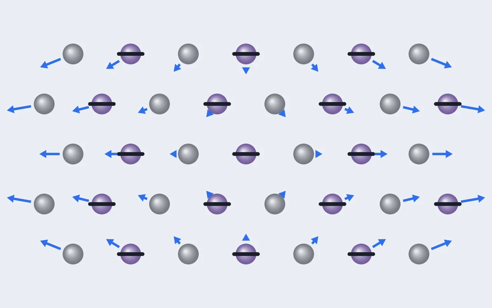
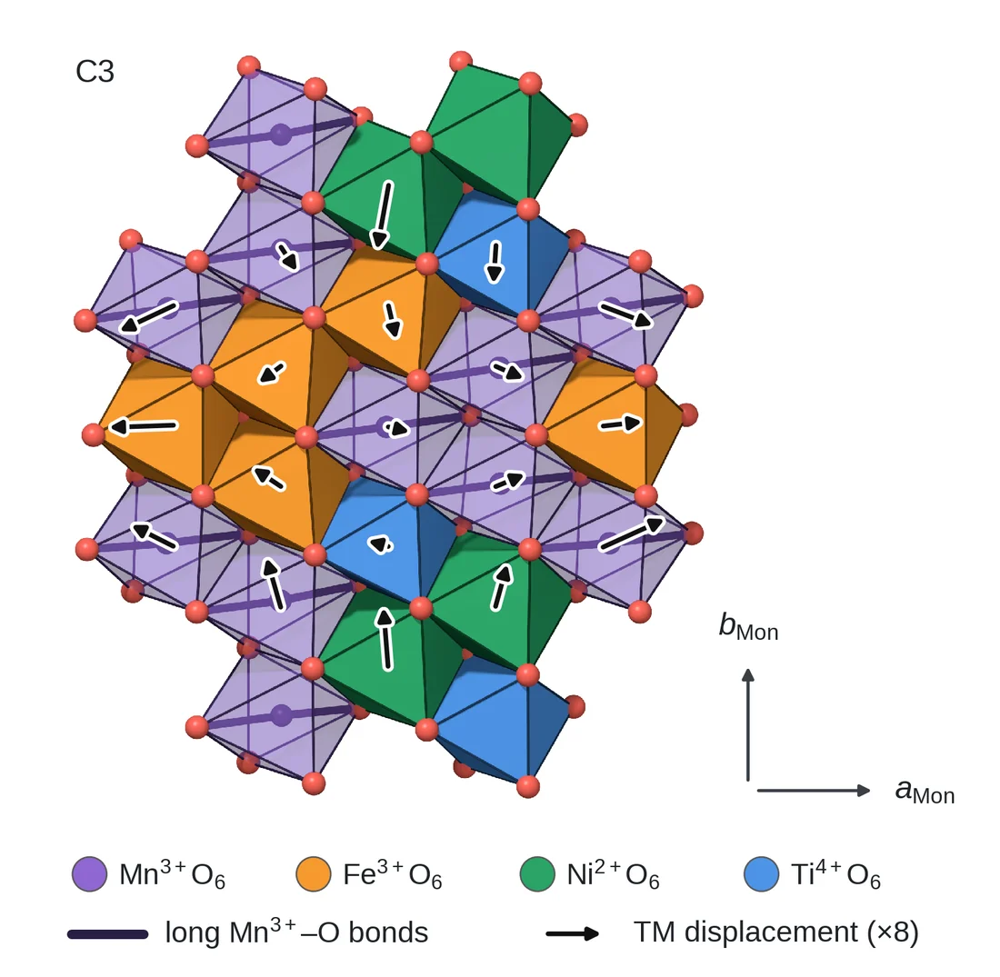
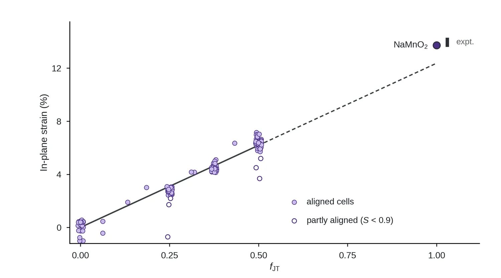
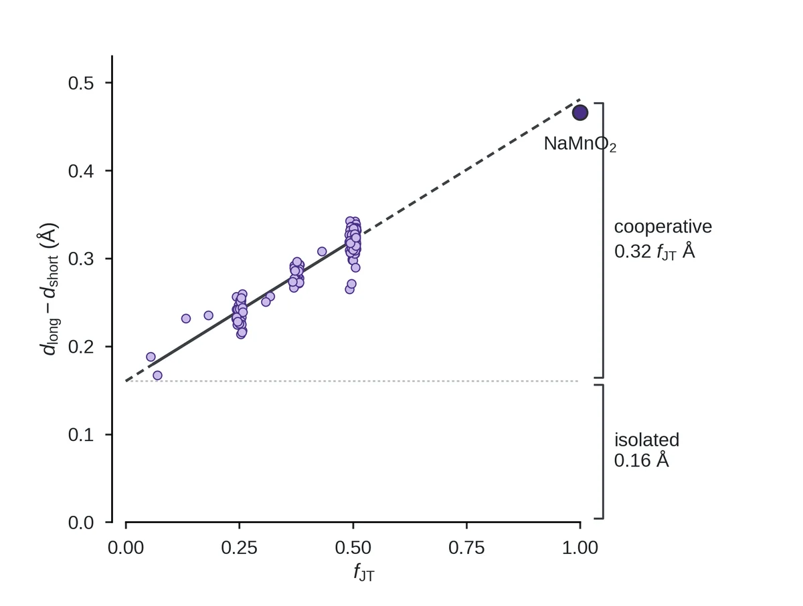
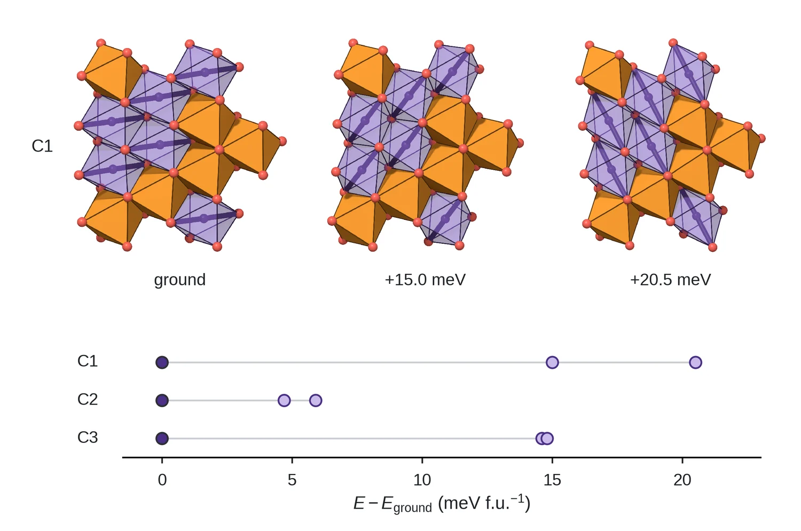

연구 [4] — 팔면체 하나의 늘어남이 격자 전체의 변형이 되기까지
연구 [3]에서 얀-텔러 이온 비율이 긴 결합의 길이를 정한다는 걸 봤습니다. 그런데 배터리에서 문제가 되는 건 팔면체 하나가 아니라 결정 전체가 늘어났다 줄었다 하는 겁니다. 이번 글은 팔면체 하나하나의 늘어남이 어떻게 격자 전체의 변형이 되는지, 그 일을 하는 게 늘어남의 어느 부분인지, 그리고 늘어나는 방향은 무엇이 정하는지를 다룹니다. 마지막 질문은 아직 시험 중이라, 어디까지 알고 무엇이 남았는지 그대로 적었습니다.

이 글에 나오는 말
- 얀-텔러 왜곡과 긴 축: Mn³⁺ 팔면체가 한 축으로 늘어나 에너지를 낮추는 현상입니다. 늘어난 축을 긴 축이라 부르고, 긴 Mn–O 결합 둘이 그 위에 있습니다. 연구 [3]에서 긴 결합의 길이가 2.167 + 0.291 fJT Å의 직선을 따른다는 것을 봤습니다.
- fJT: 전이금속(TM) 자리 가운데 Mn³⁺가 차지하는 비율입니다. 셀 안에서 실제로 판별된 Mn³⁺로 세며, 이 글의 셀들은 0.0625~0.5이고 α-NaMnO₂는 1입니다.
- 바닥 상태: 같은 조성에서 계산한 배열 가운데 에너지가 가장 낮은 구조입니다.
- 단사정 칸과 aMon, bMon: 긴 축이 정렬한 층을 기술하는 단사정(C2/m) 단위 칸입니다. aMon은 긴 축 방향, bMon은 그에 수직한 면내 방향의 변 길이이고, 변형이 없는 정삼각형 격자에서는 aMon/bMon = √3입니다.
- 면내 변형: aMon/(√3 bMon) − 1입니다. 변형이 없으면 0이고 긴 축 방향으로 늘어날수록 커집니다. α-NaMnO₂의 실험 격자 상수로 계산하면 13.6~14.3%입니다(연구 [2] 7절).
- 정렬도: 셀 안 Mn³⁺ 긴 축들이 한 방향으로 모인 정도입니다. 모두 나란하면 1입니다.
- 고립 성분과 협동 성분: 긴 결합과 짧은 결합의 차이를 fJT에 대해 직선으로 맞췄을 때, fJT와 무관한 절편(0.160 Å)이 고립 성분이고 fJT에 비례하는 부분(0.320 fJT Å)이 협동 성분입니다.
- 화학식당 에너지: 셀 에너지를 NaTMO₂ 화학식 단위의 수로 나눈 값입니다(64원자 셀은 16). 크기가 다른 셀의 에너지를 비교할 때 씁니다.
요약
질문. Mn³⁺ 팔면체 하나하나의 늘어남이 어떻게 격자 전체의 변형이 되는지. 그 일을 하는 게 늘어남의 어느 부분이고, 늘어나는 방향은 무엇이 정하는지.
방법. 연구 [2]의 DFT 셀 180개에서 전이금속 자리의 변위와 면내 변형을 재어 fJT에 대해 그렸습니다. 긴 결합과 짧은 결합의 차이를 fJT에 대해 직선으로 맞춰 고립 성분과 협동 성분으로 나눴습니다. 같은 원자 배열에서 긴 축만 세 방향으로 정렬시킨 구조를 DFT로 이완해 에너지를 비교했습니다.
답. 격자는 긴 축 방향으로 늘어나고 수직 방향으로 줄어들며, 면내 변형은 12.4 × fJT %로 비율에 정비례했습니다(R² 0.95). α-NaMnO₂의 계산값 13.7%는 실험값 13.6~14.3% 안에 있습니다. 늘어남은 고립 성분 0.160 Å과 협동 성분 0.320 fJT Å으로 나뉘고, 격자를 늘이는 건 협동 성분뿐이었습니다. 같은 배열에서 긴 축의 방향을 바꾸면 에너지가 화학식당 5~21 meV 올랐지만, 계산한 셀 거의 모두가 같은 방향을 골라서 이게 원소 배열의 효과인지 배열을 고른 과정의 편향인지는 아직 시험하고 있습니다.
1. 질문: 팔면체가 늘어나면 격자도 늘어날까
층상 구조에서 팔면체들은 모서리를 공유합니다. 그래서 Mn³⁺ 팔면체 하나가 늘어나면 공유한 산소가 움직이고 이웃도 따라 움직입니다. 모든 Mn³⁺의 긴 축이 한 방향으로 정렬해 있다면(연구 [3] 그림 1) 그 방향으로 결정 전체가 늘어날 거라고 예상할 수 있습니다. 정말 그런지, 전이금속 자리들이 실제로 어떻게 움직였는지 직접 봤습니다.

그림 1에서 화살표는 뚜렷한 무늬를 그립니다. 긴 축 방향(가로)으로는 왼쪽 끝 자리가 왼쪽으로, 오른쪽 끝 자리가 오른쪽으로 벌어지고, 그에 수직한 방향(세로)으로는 위아래 자리가 안쪽으로 모입니다. 격자가 긴 축 방향으로 늘어나고, 수직 방향으로 줄어든 겁니다. 가운데 근처의 화살표 몇 개가 비스듬한 건 자리마다의 국소적인 흔들림입니다. 이제 이 변형이 얼마나 큰지 재 봐야 합니다.
2. 얼마나 늘어나나: 비율에 정비례
격자가 얼마나 늘어났는지는 표준 척도인 면내 변형, aMon/(√3 bMon) − 1로 쟀습니다. 단사정 칸의 두 변 길이 비가 변형이 없을 때의 값 √3에서 얼마나 벗어났는지를 나타냅니다(연구 [2] 7절).

그림 2에서 면내 변형은 원점을 지나는 직선 하나를 따릅니다. 변형 = 12.4 × fJT (%)이고 R²는 0.95입니다. 얀-텔러 이온이 없는 셀(fJT = 0)은 0.1 ± 0.5%로 사실상 늘어나지 않았습니다. 이 직선 끝에서 α-NaMnO₂의 DFT 값은 13.7%로, 실험 격자 상수로 계산한 13.6–14.3% 안에 들어옵니다. 계산이 실험과 맞는다는 기준점이 하나 생긴 셈입니다.
빈 원도 중요합니다. 긴 축이 한 방향으로 잘 모이지 않은 셀 6개는 모두 직선 아래에 있습니다. 얀-텔러 이온 비율이 같아도 긴 축이 제각각이면 격자가 덜 늘어난다는 뜻입니다. 격자를 늘이는 건 얀-텔러 이온의 수만이 아니라 그 이온들이 함께 정렬하는 것이었습니다. 그러면 늘어남의 어느 부분이 그 일을 하는지가 다음 질문입니다.
3. 어느 부분이 격자를 늘이나: 협동 성분
연구 [3]의 직선(긴 결합 = 2.167 + 0.291 fJT Å)에는 눈여겨볼 점이 있습니다. fJT가 0에 가까워져도 긴 결합은 짧은 결합보다 깁니다. 얀-텔러 이온이 아주 드물어도 그 하나는 혼자서 늘어난다는 뜻입니다. 그래서 긴 결합과 짧은 결합의 차이를 비율에 대해 다시 그려 봤습니다.

그림 3의 직선은 0.160 + 0.320 fJT Å입니다(R² 0.89). 0.160 Å는 이웃에 얀-텔러 이온이 하나도 없어도 생기는 고립 성분이고, 0.320 fJT Å는 얀-텔러 이온이 많을수록 커지는 협동 성분입니다. 협동 성분이 차지하는 몫은 fJT가 0.25일 때 33%, 0.5일 때 50%, α-NaMnO₂(1)일 때 67%입니다.
이 분해를 그림 2와 나란히 놓고 보면 중요한 점이 보입니다. fJT가 0.0625인 셀은 팔면체가 이미 0.18 Å만큼 늘어나 있는데도(그림 3 왼쪽 끝), 면내 변형은 0.02%로 사실상 0입니다(그림 2 왼쪽 끝). 홀로 있는 Mn³⁺는 제자리에서만 늘어나고 격자는 늘이지 못합니다. 격자를 늘이는 건 비율에 비례하는 협동 성분뿐이고, 그래서 면내 변형도 원점을 지나는 직선이 됩니다.
여기서 연구 [2]의 그림 3에서 연결도의 효과처럼 보였던 다른 무언가도 풀립니다. 에너지가 낮은 바닥 후보끼리만 보면 Mn³⁺끼리 많이 이어진 셀일수록 왜곡이 컸지만, 그건 연결도 자체의 효과가 아니었습니다. 같은 조성 안에서 셀끼리 비교하면 격자가 더 늘어난 셀일수록 긴 결합이 길었고(C1, C2에서 R² 0.75), 에너지가 낮은 배열들은 이 협동적인 늘어남이 잘 맞는 배열이었던 겁니다. 다만 이 관계는 C3–C5에서는 약했습니다(R² 0.00–0.18). 그래서 논문에서는 보충 자료로 다룹니다.
4. 방향은 무엇이 정하나
마지막 질문은 늘어나는 방향입니다. 층에는 긴 축이 향할 수 있는 방향이 60도 간격으로 셋 있습니다. 순수한 NaMnO₂라면 셋은 대칭적으로 동등합니다. 원소가 섞인 제 조성에서 무엇이 방향을 고르는지 보려고, 같은 원자 배열을 그대로 두고 긴 축만 세 방향으로 각각 정렬시킨 출발 구조를 DFT로 이완해서 에너지를 비교했습니다.

그림 4에서 원소 배치는 세 구조가 똑같고, 긴 축만 가로에서 오른쪽 위, 다시 가파르게 서는 쪽으로 돌아갑니다. 에너지는 세 조성 모두 바닥 상태의 방향이 가장 낮았고, 다른 방향은 화학식당 C1에서 15.0, 20.5 meV, C2에서 4.7, 5.9 meV, C3에서 14.6, 14.8 meV 높았습니다. 같은 방향으로 출발시킨 대조 계산은 0.2 meV 차이로 원래 결과를 재현했습니다. 세 방향이 서로 동등하지 않다는 겁니다.
아직 확인 중인 것
이 결과를 원소 배열이 방향을 고른다고 읽고 싶지만, 그 전에 걸리는 점이 하나 있습니다. 정렬된 셀 149개 중 146개가 모두 같은 방향(셀의 격자 벡터 a 방향)을 골랐습니다. 배열이 방향을 고른다면 서로 다른 배열 30개가 세 방향으로 고르게 나뉘어야 합니다.
가장 그럴듯한 설명은 배열을 고르는 과정의 편향입니다. 수백 개 배열을 같은 방향으로 정렬된 상태에서 이완해서 에너지가 낮은 걸 골랐으니, 그 방향에 잘 맞는 배열만 골라졌을 수 있습니다. 이게 맞는지 보려고, 골라지지 않은 무작위 배열마다 세 방향의 에너지를 비교하는 시험을 지금 돌리고 있습니다.
이 시험은 실험과도 이어집니다. 제 C1과 같은 Fe–Mn 조성의 O3형 산화물은 실험에서 평균 구조가 마름모(R-3m)로 보고됩니다 [3]. 반면 계산은 긴 축이 정렬해서 격자가 늘어난다고 합니다. 무작위 배열에서 선호 방향이 세 방향으로 고르게 나뉜다면, 실제 물질에서는 영역마다 다른 방향을 골라 평균이 상쇄되고, 그래서 실험에서는 마름모로 보인다는 설명이 됩니다. 원소가 섞이지 않은 NaMnO₂는 한 방향만 골라서 단사정이 됩니다. 결과가 나오면 이 부분을 채우겠습니다.
정리
- Mn³⁺의 긴 축이 정렬하면 격자는 긴 축 방향으로 늘어나고 수직 방향으로 줄어듭니다.
- 면내 변형은 얀-텔러 이온 비율에 정비례합니다(12.4 × fJT %). α-NaMnO₂의 계산값은 실험 범위 안에 있고, 긴 축이 덜 정렬된 셀은 덜 늘어납니다.
- 늘어남은 고립 성분(0.16 Å)과 협동 성분(0.32 fJT Å)으로 나뉘고, 격자를 늘이는 건 협동 성분뿐입니다. 홀로 있는 Mn³⁺는 제자리에서만 늘어납니다.
- 같은 배열에서 방향을 바꾸면 에너지가 화학식당 5–21 meV 오릅니다. 이게 배열의 효과인지 배열을 고른 과정의 편향인지는 시험 중입니다.
참고문헌
- Phillips et al. Collinear Jahn–Teller ordering induces monoclinic distortion in defect-free LiNiO₂. J. Am. Chem. Soc. (2025).
- Parant, J.-P., Olazcuaga, R., Devalette, M., Fouassier, C. & Hagenmuller, P. Sur quelques nouvelles phases de formule NaxMnO₂ (x ≤ 1). J. Solid State Chem. 3, 1 (1971).
- Bie, X. et al. Relationship between the structural evolution and electrochemical properties of NaxFe0.5Mn0.5O₂ (0.67 ≤ x ≤ 0.83). IMLB 2014 (학회 발표).
- Radin, M. D. & Van der Ven, A. Simulating charge, spin, and orbital ordering: application to Jahn–Teller distortions in layered transition-metal oxides. Chem. Mater. 30 (2018).

Seok
연구하면서 개발합니다. 배터리 재료를 원자 단위에서 계산하는 법을 바닥부터 배우는 중입니다. → 글 더 보기